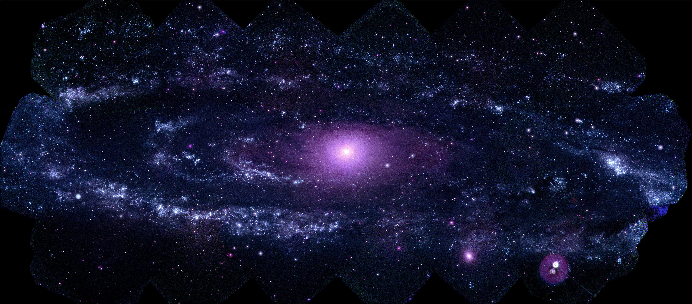

We thank the many readers who have found the (too numerous) errors in the first edition. We apologize for those and have done our best to avoid errors in this new edition.We thank Mark Segal, Bala Rajaratnam, and Larry Wasserman for comments on some of the new chapters, and many Stanford graduate and post-doctoral students who offered comments, in particular Mohammed AlQuraishi, John Boik, Holger Hoefling, Arian Maleki, Donal McMahon, Saharon Rosset, Babak Shababa, Daniela Witten, Ji Zhu and Hui Zou.We thank John Kimmel for his patience in guiding us through this new edition. RT dedicates this edition to the memory of Anna McPhee. The field of Statistics is constantly challenged by the problems that science and industry brings to its door. In the early days, these problems often came from agricultural and industrial experiments and were relatively small in scope. With the advent of computers and the information age, statistical problems have exploded both in size and complexity. Challenges in the areas of data storage, organization and searching have led to the new field of “data mining”; statistical and computational problems in biology and medicine have created “bioinformatics.” Vast amounts of data are being generated in many fields, and the statistician’s job is to make sense of it all: to extract important patterns and trends, and understand “what the data says.” We call this learning from data.

We would like to acknowledge the contribution of many people to the conception and completion of this book. David Andrews, Leo Breiman, Andreas Buja, John Chambers, Bradley Efron, Geoffrey Hinton, Werner Stuetzle, and John Tukey have greatly influenced our careers. Balasubramanian Narasimhan gave us advice and help on many computational problems, and maintained an excellent computing environment. Shin-Ho Bang helped in the production of a number of the figures. Lee Wilkinson gave valuable tips on color production. Ilana Belitskaya, Eva Cantoni, Maya Gupta, Michael Jordan, Shanti Gopatam, Radford Neal, Jorge Picazo, Bogdan Popescu, Olivier Renaud, Saharon Rosset, John Storey, Ji Zhu, Mu Zhu, two reviewers and many students read parts of the manuscript and offered helpful suggestions. John Kimmel was supportive, patient and helpful at every phase; MaryAnn Brickner and Frank Ganz headed a superb production team at Springer. Trevor Hastie would like to thank the statistics department at the University of Cape Town for their hospitality during the final stages of this book. We gratefully acknowledge NSF and NIH for their support of this work. Finally, we would like to thank our families and our parents for their love and support. This book is designed for researchers and students in a broad variety of fields: statistics, artificial intelligence, engineering, finance and others. We expect that the reader will have had at least one elementary course in statistics, covering basic topics including linear regression. We have not attempted to write a comprehensive catalog of learning methods, but rather to describe some of the most important techniques. Equally notable, we describe the underlying concepts and considerations by which a researcher can judge a learning method. We have tried to write this book in an intuitive fashion, emphasizing concepts rather than mathematical details. As statisticians, our exposition will naturally reflect our backgrounds and areas of expertise. However in the past eight years we have been attending conferences in neural networks, data mining and machine learning, and our thinking has been heavily influenced by these exciting fields. This influence is evident in our current research, and in this book.
